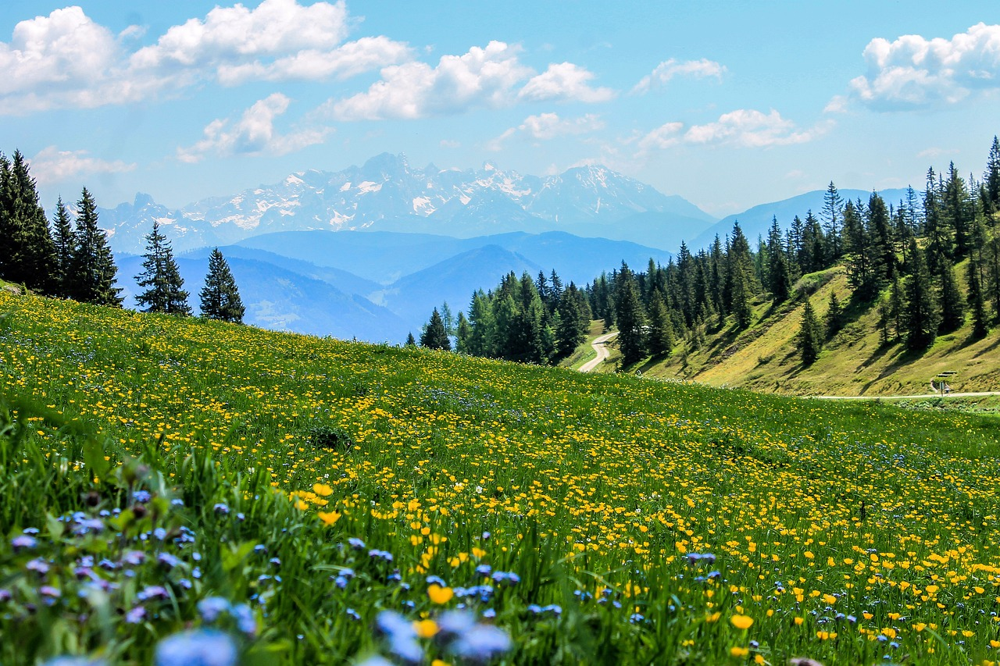

Scelta 1.1: Uccide il lupo
Nonostante Cristian abbia ucciso il lupo vede che l'intero branco è nascosto nella foresta e quindi è molto spaventato. Vede del fumo nella lontananza, quindi va dalla parte più lontana del fumo e si trova in un campo di fiori mediterranei.
